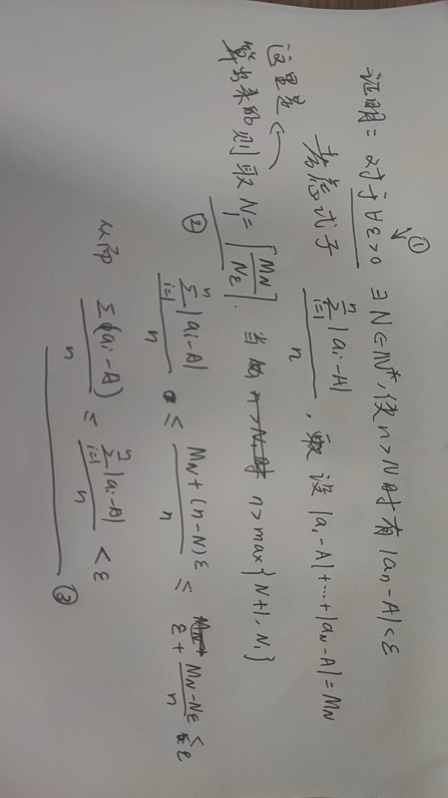
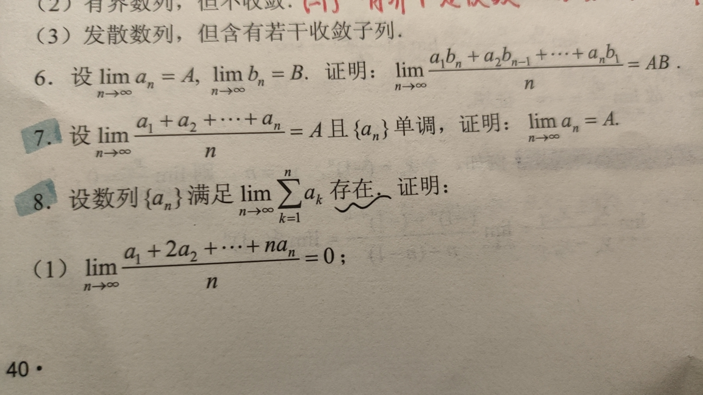

不等式控制技巧¶
在数列极限一章当中，理解并运用 \(\varepsilon-N\) 语言是最重要的一部分，在证明过程中，为了简化目标式，使得其容易选取 \(N\) 来控制式子的范围，往往需要对式子进行适当的控制。不等式控制是相当技巧性的技术，需要长期的练习和积累，但也有一些思路和固定的技法可循。宏观的来讲，不等式控制也分为两种情况，一种是结合了 \(\varepsilon-N\) 语言的控制，也就是通过选取合适的 \(N\) 来让尾项均在可以任意缩小的 \(\varepsilon\) 之内；一种是完全的初等控制，也就是同学们在高中数学或者数学竞赛中学习的一些初等的不等式放缩。下面来介绍一些典型的案例。
和式的控制¶
这一类应该是同学们初学时接触的最多的情况，例如 $$ 已知 x_n\to A，n\to \infty\ 证明：\frac{\displaystyle\sum_{i=1}^n x_n}{n}\to A,n\to\infty $$ 这道题从直觉上来讲是很简单的，将前 \(n\) 项取算术平均值以后，结果“大部分”取决于后面的各项，而前面的各项因为占比越来越小而近似忽略不计。恰好，我们知道“越往后 \(x_n\) 的取值越稳定”，用数学语言说，对 \(\forall \varepsilon\) ，我总能找到 \(N\) ，使得 \(N\) 后面的所有项都能稳定在 \(\varepsilon\) 以内，这样的一个条件是相当强的，因为我们控制了所有尾项的值，而且 \(N\) 总是有限的。所以我们的解题思路是:
Step1：对于 \(\forall \varepsilon\)，存在 \(N\) ，使得对于任意 \(n>N\) ，有 \(|x_n-A|<\varepsilon\) .
Step2：（初等变形，因为要用step1的条件），证明等价于 \(\displaystyle\frac{\sum_{i=1}^n (x_n-A)}{n}\to 0,n\to\infty\)
Step3：应用Step1的结论，\(\displaystyle\frac{\sum_{i=1}^n (x_n-A)}{n}\leq\frac{\sum_{i=1}^n |x_n-A|}{n}\leq\frac{|x_1-A|+\cdots+|x_N-A|+(n-N)\varepsilon}{n}\)
Step4：因为前 \(N\) 项是有限项，可以直接写成 \(M\) ，所以在 \(n\to\infty\) 时整个式子是趋于 \(\varepsilon\) 的，再让 \(\varepsilon\) 趋于 \(0\) 就可以了.
以上就是我们的思考过程，但书写过程要严谨一些，比如Step3中 \(n>N\) 的条件要给到， Step4中也要严格按照 \(\varepsilon-N\) 的语言来写。

事实上，和式控制的基本思路就是把和式切成“两块”，一块是有限的，另一块是每一项的值是可以控制的。

一些较难的题目也是按照类似的思路去做的，像8（1）既可以通过构造对偶式 \(\displaystyle\frac{\sum_{i=1}^n (n+1-i)a_i}{n}\) 来简化运算，也可以通过将原数列转化为 \(b_n\) ，再用 \(b_n\) 反表示 \(a_n\) 的手段来划归，最后都能归结到把数列分成两段来控制的情况。
搭桥型控制¶
这个名字是我自己起的，但用途十分广泛，在数学专业课里面也经常用到。如果希望将两个量的值控制在 \(\varepsilon\) 或者类似的范围内，而两个量的差值又不好估计时，往往通过一些具有比较好的性质的中间量，写成 \(a_n-c_n+c_n-b_n\) 的形式，并利用三角不等式分别放缩。这一类型的控制技巧性较高，但有一些比较常规的形式。
其中，最经典的莫过于极限乘法公式的证明，要证明 \(a_nb_n \to AB\) ，则需要计算 \(|a_nb_n-AB|\) ，这时候用一个中间量 \(a_n B\) 来进行搭桥，便可化归成处理两个单变元极限的问题，再分别处理即可。从直观上来看，其实就是 \((a+x)(b+y)=ab+ax+ay+by\) ，并舍弃掉三个高阶小量，而补充的其实就是一阶的高阶小量。
更技巧一些的搭桥则通过取子列等方式来进行，例如柯西收敛准则的反方向证明则是通过证明有界→取收敛子列，再将 \(|a_n-A|\) 放缩成 \(|a_n-a_{n_k}|+|a_{n_k}-A|\) ，并分别按已知进行放缩。
一些初等的控制¶
这一部分的控制理解起来并不难，主要是对一些初等不等式的放缩有一定的了解。
函数控制¶
也就是经典的 \(n^n>>n!>>a^n>>n^\alpha>>\ln n\) 的控制，建议大家把所有的情况自己证一证。其中有些情况是完全等价的，例如指数函数至于幂函数和幂函数之于对数函数，其中 \(n^n>>n!\) 主要是利用 \(\frac{n}{1}\frac{n}{2}\cdots\frac{n}{n}\) 这样一个连乘，通过截断 \(\frac{n}{n/2}\) 来使得左边的项大于一个 \(2^{n/2}\) 量级；而 \(n!>>a^n\) 则是通过 \(n>2a\)（2并不本质）来做一个截断；后面的大部分就是通过二项式展开证明了。
裂项相消控制¶
例如 \(\frac{1}{k^2}\) 转化为 \(\frac{1}{k(k+1)}\) ，\(\frac{1}{\sqrt k}\) 转化为 \(\frac{2}{\sqrt k+\sqrt {k+1}}\) ，三角函数的一些裂项等等，大部分还都算有迹可循。宏观的思想就是尽量凑出来能控制的项（比如说直接包含 \(|a_n-A|\) 的项，或者说\(f(0)=0\) 的 \(f(|a_n-A|)\) 的项等等）
反裂项相消控制¶
有时候对一个函数不易控制的时候会将其反着写开然后分别进行精细的控制，例如 \(a_n=\frac{a_n}{a_{n-1}}\cdots\frac{a_2}{a_1}a_1\) 等等，其中 \(n!\sim(\frac{n}{e})^n\) 就是用这个技术证明的。
极值、确界控制¶
这种控制有时候看起来很无厘头，比如证明 \(\lim_{n\to\infty}\sqrt[n]{x_1^n+\cdots+x_p^n}=\mathrm{max}x_i\)的时候，证明方法就是一边全放成最大值，一边只留下最大值把剩下的全扔掉，很多同学在第一遍学习是往往是非常反直觉的（当然，如果把所有的 \(x_i\) 正规化（即令 \(\mathrm{max}\ x_i=1\)，剩下的等比例缩小之后，整个式子就显得不那么奇怪了）。有时候对于有界的问题也往往可以放大成上确界，尤其是 \(a_nb_n\) 型，其中 \(a_n\) 有界 \(b_n\) 趋于 0 的情况，这时候把 \(a_n\) 全放成上确界能免去很多口舌。
分段控制¶
有时候一些式子并不是那么好控制，那不妨一步一步来简化，比如很多多项式控制就会通过不断进行 \(N\) 的截断，最后取一个大的 \(max\{N_1,N_2,\cdots,N_k\}\) 来解决问题。